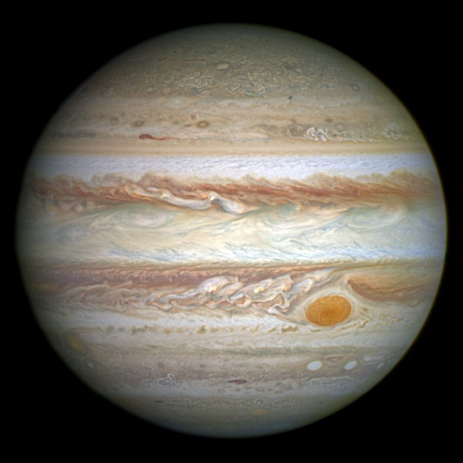
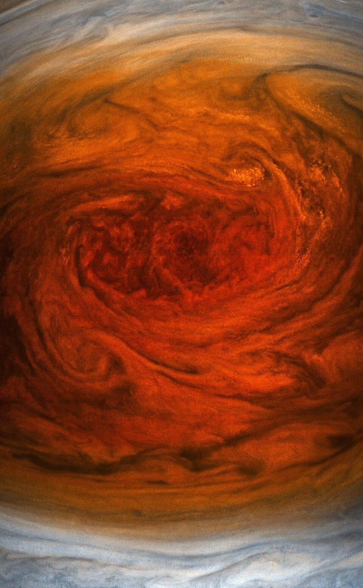
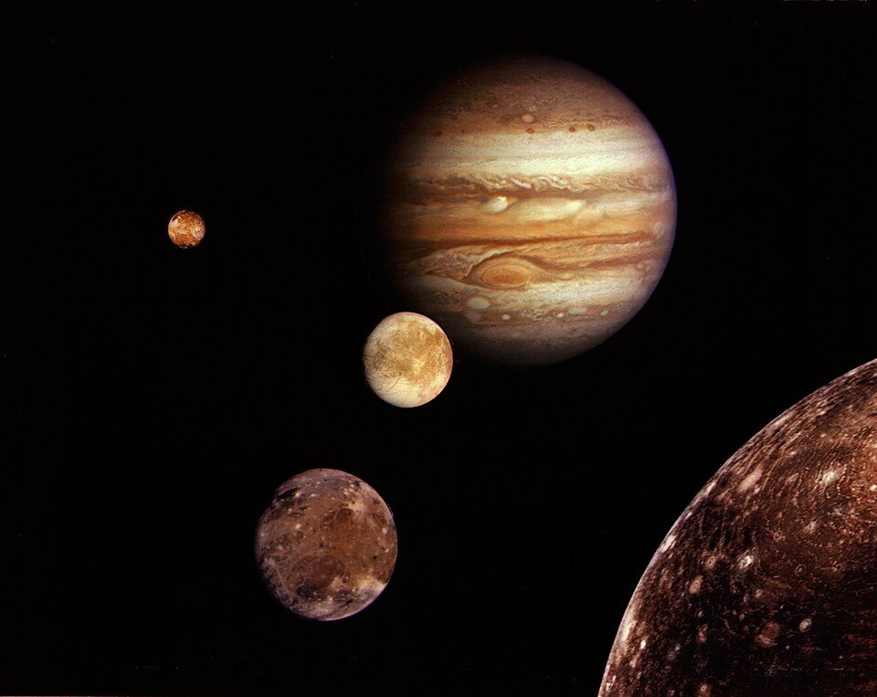

Jupiter
The giant of the solar system: more mass than all the other planets combined, a storm bigger than Earth and nearly a hundred moons.


Jupiter is the largest planet in the solar system. It has 2.5 times the mass of all the other planets combined, and more than 1,300 Earths would fit inside it. It is so bright in the night sky that only the Moon and Venus outshine it.
A planet with no ground
Jupiter is a gas giant, made mostly of hydrogen and helium, like a star. It has no solid surface: going down, the gas becomes denser and hotter until it turns into an ocean of liquid metallic hydrogen, which conducts electricity and generates the strongest magnetic field of any planet, 20,000 times Earth's.
Despite its size, Jupiter spins faster than any other planet: a day lasts less than 10 hours. That rapid rotation flattens it at the poles and stretches its clouds into the famous light and dark bands.
The Great Red Spot
It is an anticyclone, a gigantic storm with winds over 400 km/h, observed since at least 1830 and possibly since 1665. In the 19th century it was wide enough to hold three Earths; today it has shrunk to about 16,000 km, and it is still larger than our planet. Nobody knows for sure why it is red.


A system of its own
Jupiter has 97 known moons, and the list keeps growing. The four largest were discovered by Galileo Galilei in January 1610 with his telescope, and they were the first proof that not everything revolved around Earth:
- Io, the most volcanically active world in the solar system.
- Europa, with an ocean of salt water under its icy crust.
- Ganymede, the largest moon in the solar system, bigger than Mercury.
- Callisto, one of the most heavily cratered objects known.
Read more in the article on the moons of the solar system.


Guardian of the solar system
With its enormous gravity, Jupiter has shaped the history of the solar system. It can deflect comets and asteroids heading inwards, although it can also fling them towards us. In 1994 the fragments of comet Shoemaker–Levy 9 slammed into Jupiter and left dark scars larger than Earth, visible through amateur telescopes.
Missions to Jupiter
It has been visited by the Pioneer and Voyager probes, Galileo (which orbited from 1995 to 2003) and Juno, studying it since 2016 on orbits that pass over its poles. On their way now are the European Space Agency's JUICE, arriving in 2031 to study Ganymede, and NASA's Europa Clipper, arriving in 2030.
Videos to understand it better
- Jupiter 101 | National GeographicNational Geographic · 35.9M views
- What They Didn't Teach You in School About Jupiter | Our Solar System's PlanetsAstrum · 3.6M views
Videos are from YouTube and belong to their creators. They only load when you click them. See all videos →